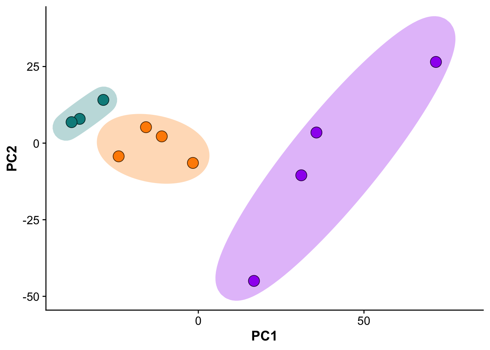
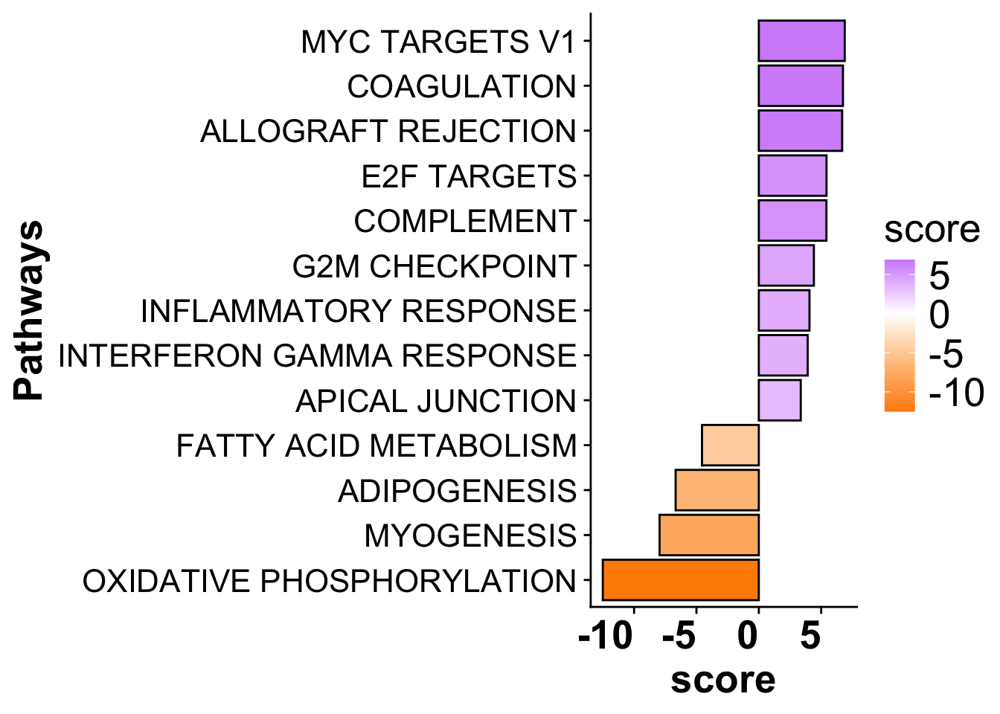
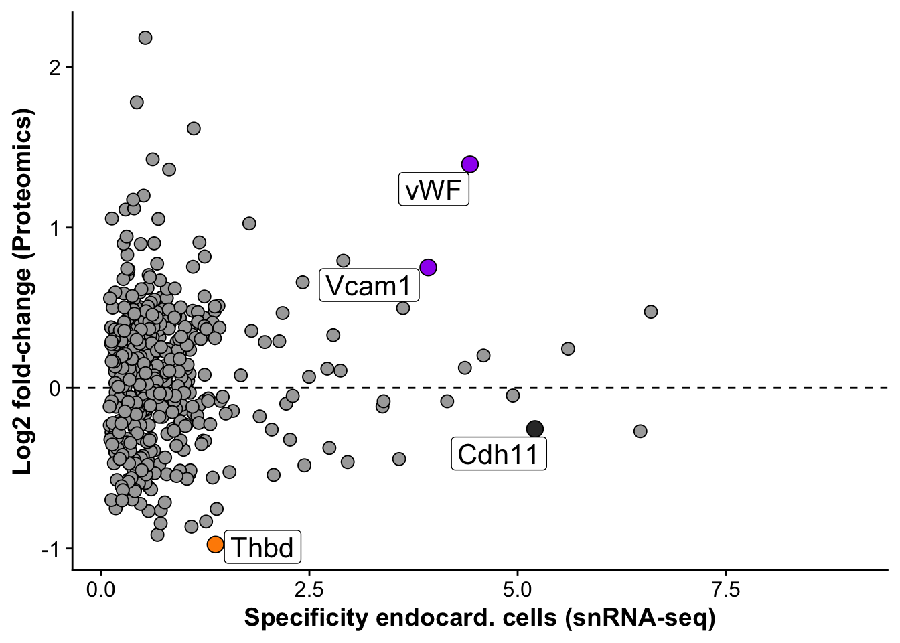

Figure 5
Florian Wuennemann
Last updated: 2025-01-20
Checks: 7 0
Knit directory: mi_spatialomics/
This reproducible R Markdown analysis was created with workflowr (version 1.7.1). The Checks tab describes the reproducibility checks that were applied when the results were created. The Past versions tab lists the development history.
Great! Since the R Markdown file has been committed to the Git repository, you know the exact version of the code that produced these results.
Great job! The global environment was empty. Objects defined in the global environment can affect the analysis in your R Markdown file in unknown ways. For reproduciblity it’s best to always run the code in an empty environment.
The command set.seed(20230612) was run prior to running
the code in the R Markdown file. Setting a seed ensures that any results
that rely on randomness, e.g. subsampling or permutations, are
reproducible.
Great job! Recording the operating system, R version, and package versions is critical for reproducibility.
Nice! There were no cached chunks for this analysis, so you can be confident that you successfully produced the results during this run.
Great job! Using relative paths to the files within your workflowr project makes it easier to run your code on other machines.
Great! You are using Git for version control. Tracking code development and connecting the code version to the results is critical for reproducibility.
The results in this page were generated with repository version 39f7f26. See the Past versions tab to see a history of the changes made to the R Markdown and HTML files.
Note that you need to be careful to ensure that all relevant files for
the analysis have been committed to Git prior to generating the results
(you can use wflow_publish or
wflow_git_commit). workflowr only checks the R Markdown
file, but you know if there are other scripts or data files that it
depends on. Below is the status of the Git repository when the results
were generated:
Ignored files:
Ignored: .Rproj.user/
Ignored: analysis/.DS_Store
Ignored: data/.DS_Store
Ignored: data/Traditional_IF_absolute_cell_counts.csv
Ignored: data/Traditional_IF_relative_cell_counts.csv
Ignored: data/seqIF_regions_annotations/
Ignored: output/.DS_Store
Ignored: output/mol_cart.harmony_object.h5Seurat
Ignored: output/molkart/
Ignored: output/proteomics/
Ignored: output/results_cts.lowres.125.sqm
Ignored: output/seqIF/
Ignored: plots/
Ignored: renv/.DS_Store
Ignored: renv/library/
Ignored: renv/staging/
Untracked files:
Untracked: analysis/SeqIF.lumen_distance_calculations.Rmd
Untracked: review/cell_table_final_lumen_bins_plot.csv
Untracked: review/cell_table_final_lumen_bins_plot_grouped.csv
Unstaged changes:
Modified: analysis/endocardial_cell_definition.Rmd
Modified: analysis/index.Rmd
Note that any generated files, e.g. HTML, png, CSS, etc., are not included in this status report because it is ok for generated content to have uncommitted changes.
These are the previous versions of the repository in which changes were
made to the R Markdown (analysis/figures.Figure5.Rmd) and
HTML (docs/figures.Figure5.html) files. If you’ve
configured a remote Git repository (see ?wflow_git_remote),
click on the hyperlinks in the table below to view the files as they
were in that past version.
| File | Version | Author | Date | Message |
|---|---|---|---|---|
| Rmd | 736f498 | FloWuenne | 2024-12-14 | R1-3: Updated Figure 5. |
| Rmd | 59f5169 | FloWuenne | 2024-12-06 | Updated figure 5 to use pseudobulks. |
| Rmd | c592ede | FloWuenne | 2024-08-25 | Corrected Violin plot typo. |
| Rmd | 3139169 | FloWuenne | 2024-08-20 | Update to Figure 5 script. |
| Rmd | d08f7ab | FloWuenne | 2024-08-20 | Updated Figure 5 script with more comments. |
| html | f3b03ed | FloWuenne | 2024-03-21 | Build site. |
| Rmd | 008f74a | FloWuenne | 2024-03-21 | Fixed links in data analysis and figures pages. |
Load data
pca_res <- readRDS("./output/proteomics/proteomics.pca_res.rds")
vsn_mat <- fread("./output/proteomics/proteomics.vsn_norm_proteins.tsv")
limma_res <- fread("./output/proteomics/proteomics.limma.full_statistics.tsv")
mi_pathways <- fread("./output/proteomics/proteomics.pathway_results.MIiz_MIremote.tsv")Subfigure A
Subfigure B - Principal component analysis
pcs <- as.data.frame(pca_res$x)
pcs$sample <- colnames(vsn_mat[,1:11])
pcs <- pcs %>%
mutate("group" = if_else(grepl("control",sample),"control",
if_else(grepl("MI_IZ",sample),"MI_IZ","MI_remote"))
)
## Set order of groups
pcs$group <- factor(pcs$group,
levels = c("control","MI_remote","MI_IZ"))
## Plot PCs
pca_plot <- ggplot(pcs,aes(PC1,PC2)) +
geom_point(size = 5,pch = 21,color = "black", aes(fill = group)) +
ggforce::geom_mark_ellipse(color = "white",aes(fill = group)) +
expand_limits(y = c(-50, 40),
x = c(-40,80)) +
scale_fill_manual(values = proteome_palette,
labels = c("Control","MI_remote","MI_IZ")) +
labs(color = "Group") +
guides(fill=guide_legend(title="Group")) +
theme(legend.position = "none")
pca_plot
| Version | Author | Date |
|---|---|---|
| f3b03ed | FloWuenne | 2024-03-21 |
save_plot(filename = "./plots/Figure_5.pca_plot.pdf",
plot = pca_plot,
base_asp = 1,
base_height = 4)Subfigure C - Volcano plot: Remote vs control
limma_mi_remote <- subset(limma_res,analysis == "MI_IZ_vs_MI_remote")
limma_remote_control <- subset(limma_res,analysis == "MI_remote_vs_control")
limma_mi_control <- subset(limma_res,analysis == "MI_IZ_vs_control")
## Which proteins are differentially expressed in MI vs remote but not in MI vs remote but not in remote vs control?
iz_uniq <- setdiff(subset(limma_mi_remote,adj.P.Val < 0.05)$gene,subset(limma_remote_control,adj.P.Val < 0.05)$gene)
limma_mi_remote_uniq <- subset(limma_mi_remote, gene %in% iz_uniq) %>%
subset(adj.P.Val < 0.05) %>%
arrange(desc(logFC))
## Get proteins from Coagulation pathway from pathway analysis results to highlight on volcano plot
mh_gsea_net <- readRDS("./references/mh.all.v2023.1.Mm.symbols.sets.rds")
pathway <- 'HALLMARK_COAGULATION'
df <- mh_gsea_net %>%
filter(source == pathway) %>%
arrange(target)
path_de_inter <- sort(intersect(limma_mi_remote$gene,df$target))# top_10_proteins <- limma_mi_remote %>%
# arrange(desc(logFC)) %>%
# top_n(wt = logFC, 10)
# top_10_proteins <- top_10_proteins$gene
# bottom_10_proteins <- limma_mi_remote %>% arrange(desc(logFC))
# bottom_10_proteins <- tail(bottom_10_proteins,n=10)
manual_labeled_proteins <- c("Thbd","Vwf","Coro1a","Thbs1")
limma_mi_remote <- limma_mi_remote %>%
# mutate("label_protein" = if_else(gene %in% path_de_inter & adj.P.Val < 0.05 & (logFC > 1.25 | logFC < 0), gene, ""))
mutate("label_protein" = if_else(gene %in% manual_labeled_proteins,gene,""))
limma_mi_remote$label_protein <- gsub("Vwf","vWF",limma_mi_remote$label_protein)
volc_limma_IZ_remote <- plot_pretty_volcano(limma_mi_remote,
pt_size = 2,
plot_title = "",
sig_thresh = 0.05,
col_pos_logFC = proteome_palette[['MI_IZ']],
col_neg_logFC = proteome_palette[['MI_remote']]) +
# geom_point(data = subset(limma_mi_remote, gene %in% path_de_inter),pch = 21, color = "black", size = 4) +
geom_label_repel(box.padding = 0.5, max.overlaps = Inf) +
geom_vline(xintercept= 0 , linetype = 2)
## Interactive plotly plot to view genes on points
# plot_ly(data = limma_mi_remote, x = ~logFC, y = ~-log10(adj.P.Val),
# text = ~paste("Gene: ", gene))
save_plot(filename = "./plots/Figure_5.volcano_plot.pdf",
plot = volc_limma_IZ_remote,
base_asp = 1.3,
base_height = 3.25)Warning: Removed 58 rows containing missing values or values outside the scale range
(`geom_label_repel()`).## Volcano plot for schema
volc_limma_remote_control <- ggplot(data=limma_remote_control,
aes(x= logFC, y= -log10(pval))) +
geom_point(size = 3, color = "black")+
theme(axis.title = element_text(size =20),
axis.text = element_blank(),
axis.ticks = element_blank()) +
geom_vline(xintercept = 0, linetype = 2)
volc_limma_remote_controlWarning: Removed 114 rows containing missing values or values outside the scale range
(`geom_point()`).
| Version | Author | Date |
|---|---|---|
| f3b03ed | FloWuenne | 2024-03-21 |
save_plot(filename = "./plots/Figure_4.volcano_schema.pdf",
plot = volc_limma_remote_control,
base_asp = 1.4,
base_height = 3)Warning: Removed 114 rows containing missing values or values outside the scale range
(`geom_point()`).Subfigure D - Pathway enrichment for MI_IZ vs MI_remote
sig_pathways_mi <- subset(mi_pathways,p_value <= 0.05) %>%
arrange(desc(score)) %>%
dplyr::select(-statistic,-condition) %>%
subset(score > 3 | score < -3)
sig_pathways_mi$source <- gsub("HALLMARK_","",sig_pathways_mi$source)
sig_pathways_mi$source <- gsub("_"," ",sig_pathways_mi$source)
path_plot <- ggplot(sig_pathways_mi, aes(x = reorder(source, score), y = score)) +
geom_bar(aes(fill = score),color = "black", stat = "identity") +
scale_fill_gradient2(low = "darkorange", high = "purple",
mid = "white", midpoint = 0) +
# scale_fill_viridis(option = "F", direction = 1) +
theme(axis.title = element_text(face = "bold", size = 20),
axis.text.x = element_text(hjust = 1, size =20, face= "bold"),
axis.text.y = element_text(size =16),
panel.grid.major = element_blank(),
panel.grid.minor = element_blank(),
legend.text = element_text(size =20),
legend.title = element_text(size =20)) +
xlab("Pathways") +
coord_flip()
path_plot
| Version | Author | Date |
|---|---|---|
| f3b03ed | FloWuenne | 2024-03-21 |
save_plot(filename = "./plots/Figure_5.pathway_plot.pdf",
plot = path_plot,
base_asp = 2,
base_height = 4)Subfigure E - Vwf specificity for Endocardial cells
snrna_prot <- fread("./output/proteomics/proteomics.snRNAseq_comp.tsv")
snrna_prot <- snrna_prot %>%
mutate("label_gene" = if_else(gene %in% c("Cdh11","Thbd","Vcam1"),gene,
if_else(gene == "Vwf","vWF",""))) %>%
subset(pct.1 > 0.05)
endo_proteomic_corr <- ggplot(snrna_prot,aes(avg_log2FC,logFC,
label = label_gene)) +
geom_hline(yintercept = 0, linetype = 2) +
geom_point(data =subset(snrna_prot,gene != "Vwf"), size =3, fill = "darkgrey", pch = 21) +
geom_point(data = subset(snrna_prot,gene %in% c("Vwf","Vcam1")),size = 4, fill = "purple", pch = 21) +
geom_point(data = subset(snrna_prot,gene %in% c("Thbd")),size = 4, fill = "darkorange", pch = 21) +
geom_point(data = subset(snrna_prot,gene %in% c("Cdh11")),size = 4, fill = "grey20", pch = 21) +
geom_label_repel(size = 5.5, max.overlaps = 20,force = 3) +
labs(x = "Specificity endocard. cells (snRNA-seq)",
y = "Log2 fold-change (Proteomics)")
endo_proteomic_corrWarning: Removed 1598 rows containing missing values or values outside the scale range
(`geom_point()`).Warning: Removed 1598 rows containing missing values or values outside the scale range
(`geom_label_repel()`).
| Version | Author | Date |
|---|---|---|
| f3b03ed | FloWuenne | 2024-03-21 |
save_plot(filename = "./plots/Figure_5.vwf_specificity_plot.pdf",
plot = endo_proteomic_corr,
base_asp = 1.75,
base_height = 3.5)Warning: Removed 1598 rows containing missing values or values outside the scale range
(`geom_point()`).
Removed 1598 rows containing missing values or values outside the scale range
(`geom_label_repel()`).Subfigure F - Vwf is upregulated in MI_IZ
source("./code/functions.R")
yaxis_limits <- c(11,17)
vsn_matrix <- fread("./output/proteomics/proteomics.vsn_norm_proteins.tsv")
colnames(vsn_matrix)[1:11] <- paste("s",1:11,colnames(vsn_matrix)[1:11],sep="_")
protein_sub <- vsn_matrix %>%
dplyr::select(1:11,gene) %>%
pivot_longer(1:11,names_to = "sample", values_to = "exp") %>%
mutate("group" = if_else(grepl("control",sample),"control",
if_else(grepl("MI_IZ",sample),
"MI_IZ","MI_remote"))
)
protein_sub$group <- gsub("control","Control",protein_sub$group)
protein_sub$group <- factor(protein_sub$group,
levels = c("Control","MI_remote","MI_IZ"))
## Barplot with points as alternative.
# goi <- "Vwf"
# vwf_plot_bar <- plot_proteomics_boxplot(norm_table = protein_sub,
# protein = goi,
# style = "bar") +
# geom_signif(comparisons = list(c("MI_IZ","MI_remote")),
# tip_length = 0, annotation = "0.0057", y_position = 15.5) +
# geom_signif(comparisons = list(c("MI_IZ","Control")),
# tip_length = 0, annotation = "0.0022", y_position = 16.5) +
# expand_limits(y = c(13, 17)) +
# theme(axis.text.x = element_text(angle = 90, vjust = 1, hjust=1)) +
# labs(x = "")
## Median plot with points
goi <- "Cdh11"
npr3_plot <- plot_proteomics_boxplot(norm_table = protein_sub,
protein = goi,
style = "mean") +
theme(axis.text.x = element_text(angle = 90, vjust = 1, hjust=1)) +
labs(x = "") +
ylim(yaxis_limits) +
labs(y = "") +
scale_x_discrete(labels=c("Control" = "Control",
"MI_remote" = "MI remote",
"MI_IZ" = "MI IZ"))Warning: The `fun.y` argument of `stat_summary()` is deprecated as of ggplot2 3.3.0.
ℹ Please use the `fun` argument instead.
This warning is displayed once every 8 hours.
Call `lifecycle::last_lifecycle_warnings()` to see where this warning was
generated.Warning: Using `size` aesthetic for lines was deprecated in ggplot2 3.4.0.
ℹ Please use `linewidth` instead.
This warning is displayed once every 8 hours.
Call `lifecycle::last_lifecycle_warnings()` to see where this warning was
generated.## Mean plot with points
goi <- "Thbd"
thbd_plot <- plot_proteomics_boxplot(norm_table = protein_sub,
protein = goi,
style = "mean") +
theme(axis.text.x = element_text(angle = 90, vjust = 1, hjust=1)) +
geom_signif(comparisons = list(c("MI_IZ","MI_remote")),
tip_length = 0, annotation = "0.001", y_position = 16.5) +
geom_signif(comparisons = list(c("MI_IZ","Control")),
tip_length = 0, annotation = "0.023", y_position = 15.5) +
labs(x = "") +
ylim(yaxis_limits) +
labs(y = "") +
scale_x_discrete(labels=c("Control" = "Control",
"MI_remote" = "MI remote",
"MI_IZ" = "MI IZ"))
## Median plot with points
goi <- "Vcam1"
vcam1_plot <- plot_proteomics_boxplot(norm_table = protein_sub,
protein = goi,
style = "mean") +
theme(axis.text.x = element_text(angle = 90, vjust = 1, hjust=1)) +
geom_signif(comparisons = list(c("MI_IZ","MI_remote")),
tip_length = 0, annotation = "6.7e-4", y_position = 16.5) +
geom_signif(comparisons = list(c("MI_IZ","Control")),
tip_length = 0, annotation = "0.0078", y_position = 15.5) +
labs(x = "") +
ylim(yaxis_limits) +
labs(y = "") +
scale_x_discrete(labels=c("Control" = "Control",
"MI_remote" = "MI remote",
"MI_IZ" = "MI IZ"))
## Median plot with points
goi <- "Vwf"
vwf_plot <- plot_proteomics_boxplot(norm_table = protein_sub,
protein = goi,
style = "mean") +
geom_signif(comparisons = list(c("MI_IZ","MI_remote")),
tip_length = 0, annotation = "0.0057", y_position = 16.5) +
geom_signif(comparisons = list(c("MI_IZ","Control")),
tip_length = 0, annotation = "0.0022", y_position = 15.5) +
theme(axis.text.x = element_text(angle = 90, vjust = 1, hjust=1)) +
labs(x = "") +
ylim(yaxis_limits) +
scale_x_discrete(labels=c("Control" = "Control",
"MI_remote" = "MI remote",
"MI_IZ" = "MI IZ"))
# save_plot(filename = "./figures/Figure_5.vwf_expression_plot.pdf",
# plot = vwf_plot,
# base_asp = 0.5,
# base_height = 4)
joined_plot <- npr3_plot + thbd_plot + vcam1_plot + vwf_plot + plot_layout(nrow = 1,axis_titles = "collect") & labs(y = "Normalized protein level")
save_plot(filename = "./plots/Figure_5.expression_plot.pdf",
plot = joined_plot,
base_asp = 2.5,
base_height = 4)Warning: The dot-dot notation (`..y..`) was deprecated in ggplot2 3.4.0.
ℹ Please use `after_stat(y)` instead.
This warning is displayed once every 8 hours.
Call `lifecycle::last_lifecycle_warnings()` to see where this warning was
generated.Combine plots for figure
# # Combine plots
# comb_plot <- (pca_plot + volc_limma_IZ_remote + path_plot) / (endo_proteomic_corr + wrap_plots(npr3_plot,vwf_plot))
#
# save_plot(filename = "./figures/Figure_4.proteomics_combined.pdf",
# plot = comb_plot,
# base_asp = 2.5,
# base_height = 12)Subfigure H - human CITE-seq umap
We first read in the rds object for the human CITE-Seq data from Amrute et al. 2022.
library(Seurat)Warning: package 'Seurat' was built under R version 4.3.3Loading required package: SeuratObjectWarning: package 'SeuratObject' was built under R version 4.3.3Loading required package: sp
Attaching package: 'SeuratObject'The following objects are masked from 'package:base':
intersect, tlibrary(SCpubr)
── SCpubr 2.0.2 ────────────────────────────────────────────────────────────────
ℹ Have a look at extensive tutorials in SCpubr's book.
✔ If you use SCpubr in your research, please cite it accordingly.
★ If the package is useful to you, consider leaving a Star in the GitHub repository.
! Keep track of the package updates on Twitter (@Enblacar) or in the Official NEWS website.
♥ Happy plotting!
── Tips! ──
ℹ To remove the white and black end from continuous palettes, use: options("SCpubr.ColorPaletteEnds" = FALSE)
✖ To suppress this startup message, use: suppressPackageStartupMessages(library(SCpubr))
✖ Alternatively, you can also set the following option: options("SCpubr.verbose" = FALSE)
And then load the package normally (and faster) as: library(SCpubr)
────────────────────────────────────────────────────────────────────────────────human_citeseq <- readRDS("../public_data/Amrute_et_al/final_global_annotated.rds")We then plot the UMAP of their SCT data to highlight the endocardial cell cluster.
DefaultAssay(human_citeseq) <- "SCT"
#Choose endocardial cluster
Idents(human_citeseq) <- "annotation.0.1"
human_endocardium <- subset (human_citeseq, idents = "Endocardium")
#Choose Donor and AMI only
Idents(human_endocardium) <- "HF.etiology"
human_endocardium <- subset (human_endocardium, idents = c("Donor", "AMI"))
#plot VWF expression
plot3 <- VlnPlot (human_endocardium, feature = c("VWF"), cols = c("#008000", "#CD1076"))
#plot Umap embedding using SCpubr package
named_colors <- c("Fibroblast" = "#1f77b4",
"B Cells" = "#d62728",
"Plasma Cells" = "#ff7f0e",
"Endocardium" = "#17becf",
"Endothelium" = "#8c564b",
"Lymphatics" = "lightgrey",
"T_NK Cells" = "#bcbd22",
"Myeloid" = "#2ca02c",
"Glia" = "#9467bd",
"SMC_Pericyte" = "#e377c2",
"Mast Cells" = "darkred")
human_cite_umap <- SCpubr::do_DimPlot(sample = human_citeseq,
label = FALSE, label.box= TRUE,
group.by = "annotation.0.1",
repel = TRUE,
legend.position = "right", plot_cell_borders = TRUE,
plot_density_contour = FALSE,
plot.axes = FALSE, raster.dpi = 300,
shuffle = FALSE,
pt.size = 0.4, reduction = "rna.umap",
legend.icon.size = 5,
legend.byrow = TRUE, colors.use = named_colors) +
theme(legend.position = "none")
save_plot(human_cite_umap,
file = "./plots/Figure4.human_citeseq_umap.png",
base_height = 3,
base_asp = 1.3)Subfigure I - Violin plot for vWF
We want to find out, whether vWF is differentially expressed between Donor and AMI samples in the human endocardial cell cluster. To do so, we will generate pseudobulk data for the endocardial cluster per sample and then compare Donor vs AMI groups. This way, we are basically performing a DE analysis at the pseudobulk level, taking biological replicates into account, while not inflating the test statistics with single-cell measurements.
sub_human_cite <- subset(human_endocardium,HF.etiology %in% c("Donor","AMI"))
sub_human_cite$disease_group <- sub_human_cite$HF.etiology
## Quick DE analysis between Donor and AMI
sub_human_cite_pb <- AggregateExpression(sub_human_cite,
return.seurat = T,
group.by = c("sample","disease_group"))Centering and scaling data matrixIdents(sub_human_cite_pb) <- "disease_group"
sub_human_cite_pb_de <- FindMarkers(object = sub_human_cite_pb,
ident.1 = "Donor",
ident.2 = "AMI",
test.use = "DESeq2",
assay = "RNA",
slot = "counts",
min.pct = 0.1)converting counts to integer modegene-wise dispersion estimatesmean-dispersion relationshipfinal dispersion estimatessub_human_cite_pb_de$gene <- rownames(sub_human_cite_pb_de)
sub_human_cite_pb_vwf <- subset(sub_human_cite_pb_de,gene == "VWF")
## We will fetch the p-value for vWF as we are specifically looking at this one gene
pvalue <- sub_human_cite_pb_vwf$p_val
pvalue[1] 4.556473e-06Finally, let’s plot a violin plot for all cells across all samples in the endocardial cluster. First, we will plot a version with only two violins, one for each group.
Idents(sub_human_cite) <- sub_human_cite$disease_group
vwf_vlnpot <- SCpubr::do_ViolinPlot(sample = sub_human_cite,
features = "VWF",
group.by = "disease_group",
line_width = 1,
legend.position = "none",
legend.title = "",
font.size = 25,
ylab = "Expression level",
xlab = "",
colors.use = c("Donor" = "#008000",
"AMI" = "#CD1076",
"ICM" = "white",
"NICM" = "white"))
vwf_vlnpot <- vwf_vlnpot + theme(plot.margin = margin(t=10, r=10, b=-25, l=10, unit="pt"))
vwf_vlnpot
# save_plot(vwf_vlnpot,
# file = "./plots/Figure4.human_citeseq_vlnplot.pdf",
# base_height = 4)As a second visualization option, we will plot a boxplot to show the pseudobulk values that were used in the statistical tests. Here, each dot represents the pseudobulk value for 1 sample for each group (Donor n=6, AMI n=4).
Idents(sub_human_cite_pb) <- sub_human_cite_pb$disease_group
sub_human_cite_pb$disease_group <- factor(sub_human_cite_pb$disease_group, levels = c("Donor","AMI"))
vwf_vlnpot_pseudobulk <- VlnPlot(sub_human_cite_pb,
features = "VWF",
group.by = "disease_group",
pt.size = 4,
cols = c("#008000", "#CD1076"))
save_plot(vwf_vlnpot_pseudobulk,
file = "./plots/Figure5.human_citeseq_vlnplot.pdf",
base_height = 4,
base_asp = 2.25)Save differential protein expression results for Table 3
table3 <- limma_res %>%
select(-c(label_protein,"P.Value"))
colnames(table3) <- gsub("\\.","_",colnames(table3))
colnames(table3) <- gsub("adj_P_Val","ajusted_pval",colnames(table3))
table3 <- table3 %>%
select(analysis,logFC,AveExpr,t,pval,ajusted_pval,B,gene,protein_ids) %>%
arrange(desc(logFC)) %>%
drop_na()
write.table(table3,
file = "./output/proteomics/Table3.tsv",
sep = "\t",
quote = F,
row.names = F,
col.names = TRUE)
sessionInfo()R version 4.3.1 (2023-06-16)
Platform: aarch64-apple-darwin20 (64-bit)
Running under: macOS Sonoma 14.1.2
Matrix products: default
BLAS: /Library/Frameworks/R.framework/Versions/4.3-arm64/Resources/lib/libRblas.0.dylib
LAPACK: /Library/Frameworks/R.framework/Versions/4.3-arm64/Resources/lib/libRlapack.dylib; LAPACK version 3.11.0
locale:
[1] en_US.UTF-8/en_US.UTF-8/en_US.UTF-8/C/en_US.UTF-8/en_US.UTF-8
time zone: America/Toronto
tzcode source: internal
attached base packages:
[1] stats graphics grDevices datasets utils methods base
other attached packages:
[1] SCpubr_2.0.2 Seurat_5.1.0 SeuratObject_5.0.2 sp_2.1-4
[5] RColorBrewer_1.1-3 ggsci_3.2.0 cowplot_1.1.3 ggforce_0.4.2
[9] patchwork_1.3.0 ggsignif_0.6.4 ggbeeswarm_0.7.2 ggrepel_0.9.6
[13] here_1.0.1 data.table_1.16.2 lubridate_1.9.3 forcats_1.0.0
[17] stringr_1.5.1 dplyr_1.1.4 purrr_1.0.2 readr_2.1.5
[21] tidyr_1.3.1 tibble_3.2.1 ggplot2_3.5.1 tidyverse_2.0.0
[25] workflowr_1.7.1
loaded via a namespace (and not attached):
[1] RcppAnnoy_0.0.22 splines_4.3.1
[3] later_1.4.1 bitops_1.0-9
[5] ggplotify_0.1.2 polyclip_1.10-7
[7] fastDummies_1.7.4 lifecycle_1.0.4
[9] rprojroot_2.0.4 globals_0.16.3
[11] processx_3.8.4 lattice_0.22-5
[13] MASS_7.3-60 magrittr_2.0.3
[15] plotly_4.10.4 sass_0.4.9
[17] rmarkdown_2.29 jquerylib_0.1.4
[19] yaml_2.3.10 httpuv_1.6.15
[21] sctransform_0.4.1 spam_2.11-0
[23] spatstat.sparse_3.1-0 reticulate_1.40.0
[25] pbapply_1.7-2 zlibbioc_1.48.2
[27] abind_1.4-8 GenomicRanges_1.54.1
[29] Rtsne_0.17 RCurl_1.98-1.16
[31] BiocGenerics_0.48.1 yulab.utils_0.1.8
[33] tweenr_2.0.3 git2r_0.35.0
[35] GenomeInfoDbData_1.2.11 IRanges_2.36.0
[37] S4Vectors_0.40.2 irlba_2.3.5.1
[39] listenv_0.9.1 spatstat.utils_3.1-1
[41] goftest_1.2-3 RSpectra_0.16-2
[43] spatstat.random_3.3-2 fitdistrplus_1.2-1
[45] parallelly_1.40.0 DelayedArray_0.28.0
[47] leiden_0.4.3.1 codetools_0.2-19
[49] tidyselect_1.2.1 farver_2.1.2
[51] viridis_0.6.5 stats4_4.3.1
[53] matrixStats_1.4.1 spatstat.explore_3.3-3
[55] jsonlite_1.8.9 progressr_0.15.1
[57] ggridges_0.5.6 survival_3.5-7
[59] systemfonts_1.1.0 tools_4.3.1
[61] ragg_1.3.3 ica_1.0-3
[63] Rcpp_1.0.13-1 glue_1.8.0
[65] SparseArray_1.2.4 gridExtra_2.3
[67] DESeq2_1.42.1 xfun_0.49
[69] MatrixGenerics_1.14.0 GenomeInfoDb_1.38.8
[71] withr_3.0.2 BiocManager_1.30.25
[73] fastmap_1.2.0 fansi_1.0.6
[75] callr_3.7.6 digest_0.6.37
[77] timechange_0.3.0 R6_2.5.1
[79] mime_0.12 gridGraphics_0.5-1
[81] textshaping_0.4.0 colorspace_2.1-1
[83] scattermore_1.2 tensor_1.5
[85] spatstat.data_3.1-4 utf8_1.2.4
[87] generics_0.1.3 renv_1.0.3
[89] S4Arrays_1.2.1 httr_1.4.7
[91] htmlwidgets_1.6.4 whisker_0.4.1
[93] uwot_0.2.2 pkgconfig_2.0.3
[95] gtable_0.3.6 lmtest_0.9-40
[97] XVector_0.42.0 htmltools_0.5.8.1
[99] dotCall64_1.2 Biobase_2.62.0
[101] scales_1.3.0 png_0.1-8
[103] spatstat.univar_3.1-1 knitr_1.49
[105] rstudioapi_0.17.1 tzdb_0.4.0
[107] reshape2_1.4.4 nlme_3.1-163
[109] cachem_1.1.0 zoo_1.8-12
[111] KernSmooth_2.23-22 parallel_4.3.1
[113] miniUI_0.1.1.1 vipor_0.4.7
[115] pillar_1.9.0 grid_4.3.1
[117] vctrs_0.6.5 RANN_2.6.2
[119] promises_1.3.2 xtable_1.8-4
[121] cluster_2.1.4 beeswarm_0.4.0
[123] evaluate_1.0.1 locfit_1.5-9.10
[125] cli_3.6.3 compiler_4.3.1
[127] rlang_1.1.4 crayon_1.5.3
[129] future.apply_1.11.3 labeling_0.4.3
[131] ps_1.8.1 getPass_0.2-4
[133] plyr_1.8.9 fs_1.6.5
[135] stringi_1.8.4 BiocParallel_1.36.0
[137] viridisLite_0.4.2 deldir_2.0-4
[139] assertthat_0.2.1 munsell_0.5.1
[141] lazyeval_0.2.2 spatstat.geom_3.3-4
[143] Matrix_1.6-5 RcppHNSW_0.6.0
[145] hms_1.1.3 future_1.34.0
[147] shiny_1.9.1 SummarizedExperiment_1.32.0
[149] ROCR_1.0-11 igraph_2.1.1
[151] bslib_0.8.0